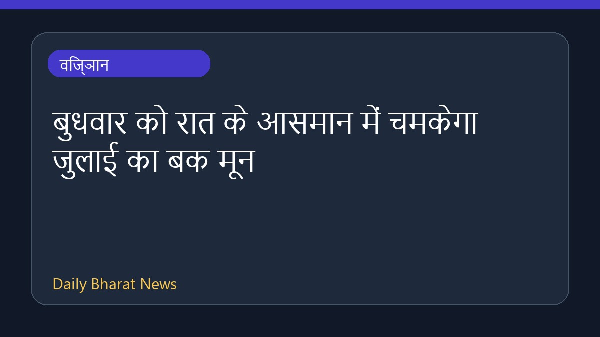

बुधवार को रात के आसमान में चमकेगा जुलाई का बक मून

जुलाई का पूर्ण चंद्रमा, जिसे बक मून के रूप में जाना जाता है, बुधवार को रात के आसमान को रोशन करने के लिए तैयार है। यह खगोलीय घटना रात के समय आकाश में दिखाई देगी। इस बारे में विवरण सीमित हैं, लेकिन यह पूर्ण चंद्रमा प्रेमियों और खगोल विज्ञान में रुचि रखने वालों के लिए एक सुंदर नजारा पेश करेगा। आसमान साफ रहने पर इसे आसानी से देखा जा सकता है।
मूल स्रोत: BBC Science
How to see July's Buck Moon light up the night sky ↗
How to see July's Buck Moon light up the night sky ↗